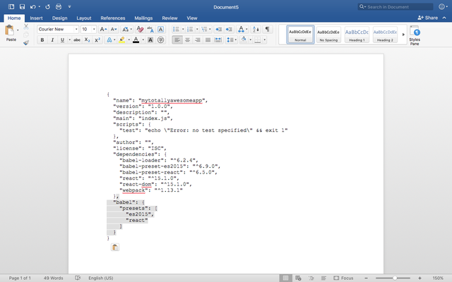
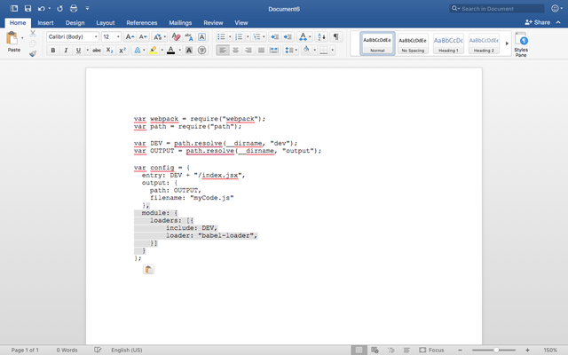

設置 ReactDev 環境
我們要來設置React 的建置環境以便來 建立一個 React 的 App.
學習React 已是非常困難了， 我們必須要簡化React 建置環境的難易度。其中一個方法是結合Node, Babel, 和 webpack 。 我們將會做進一步的介紹。
Node JS. ：
讓你可以用JavaScript 來建置app並且可以進入很多我們瀏覽器無法瀏覽的API。 Node JS 建置完全是用JavaScript 來建立專案。
Babel:
Babel 是JavaScript 的轉換器。舉例來說：JS 或是JSX 的檔案 都可以用Babel 轉換到可讀取的JavaScript.
Webpack:
Webpack 包含了很多函式庫以及框架，避免浪費寫程式時的空間。
開始來環境建製吧！
設置初始專案架構:
首先我們必須到桌面建立一個檔案稱作：MyTotallyAwesomeApp,並且在裡面建立dev 和 output 兩個資料夾。Dev 用來放置未轉換的JSX 資料夾。Output 放置專案建立後的結果。在來我們要在 資料夾中建立一個HTML 檔稱作index.html 。並且包含以下程式碼。
<!DOCTYPE html> <html> <head> <title>React! React! React!</title> </head> <body> <div id="container"></div> <script src="output/myCode.js"></script> </body> </html>
記得要存檔！
安裝Node.JS
到以下網站案裝其中一個Node 檔案https://nodejs.org/ 接下來我們要到我們的MyTotallyAwesomeApp資料夾中初始化Node.JS。在Terminal 中輸入
npm init
但是！因為我們的資料中有大寫，所以會錯誤。我們將名稱改為mytotallyawesomeapp 來看看我們的資料夾，是不是多了package.json檔案呢？沒錯，這就對了！接下來我們要安裝 React Dependencies。
開啟終端機輸入：
npm install react react-dom --save
開始跑安裝啦！ 安裝完請到MyTotallyAwesomeApp中確認是不是有node_modules檔案 新增JSX檔案： 到dev資料夾中建立index.jsx 並且複製貼上以下的程式碼。
import React from "react"; import ReactDOM from "react-dom"; var HelloWorld = React.createClass({ render: function() { return ( <p>Hello, {this.props.greetTarget}!</p> ); } }); ReactDOM.render( <div> <HelloWorld greetTarget="Batman"/> <HelloWorld greetTarget="Iron Man"/> <HelloWorld greetTarget="Nicolas Cage"/> <HelloWorld greetTarget="Mega Man"/> <HelloWorld greetTarget="Bono"/> <HelloWorld greetTarget="Catwoman"/> </div>, document.querySelector("#container") );
好，接下來我們要做的就是轉換JSX 到JS!
設置Webpack於資料夾中
在Termainal 中輸入
npm install webpack --save
我們會看到webpack.config.js已經建立起來了！把以下程式碼輸入到檔案裡面吧！
var webpack = require("webpack"); var path = require("path"); var DEV = path.resolve(__dirname, "dev"); var OUTPUT = path.resolve(__dirname, "output"); var config = { entry: DEV + "/index.jsx", output: { path: OUTPUT, filename: "myCode.js" } }; module.exports = config;
設置Babel:
輸入以下指令到Terminal中：
npm install babel-core babel-loader babel-preset-es2015 babel-preset-react --save
接下來我們要新增package.json 裡面的程式碼：
接下來我們開啟webpack.config.js新增以下程式碼：
完成了！然我們來測試我們App 吧！
打開terminal並且輸入
./node_modules/.bin/webpack
我們到MyTotallyAwesomeApp中開啟index.html。只要網頁顯示圖片就成功了！

你們辦到了！